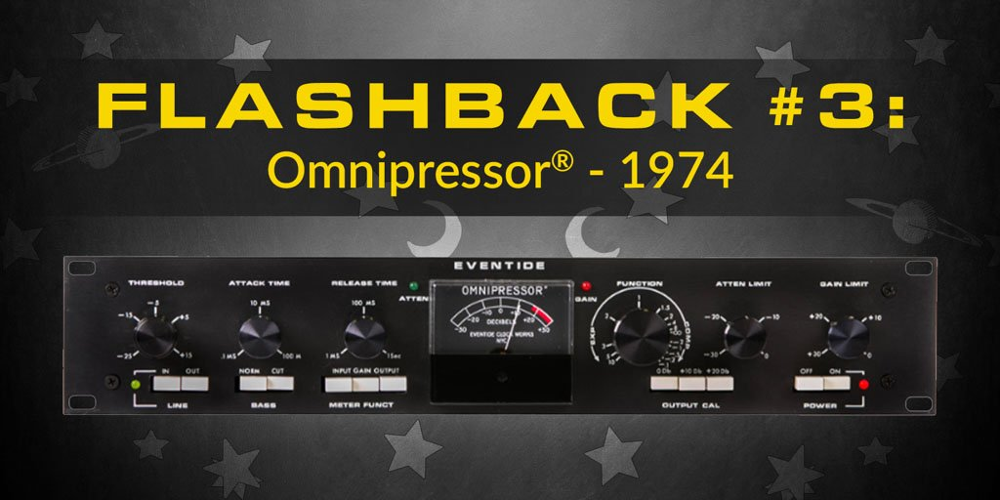
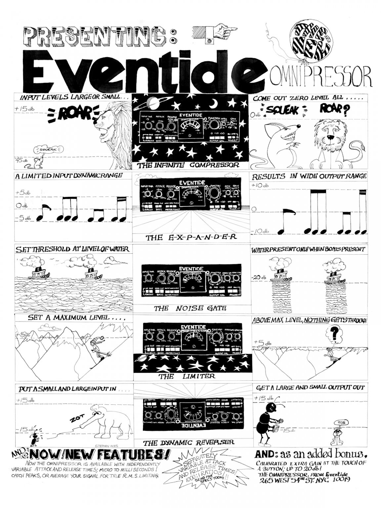
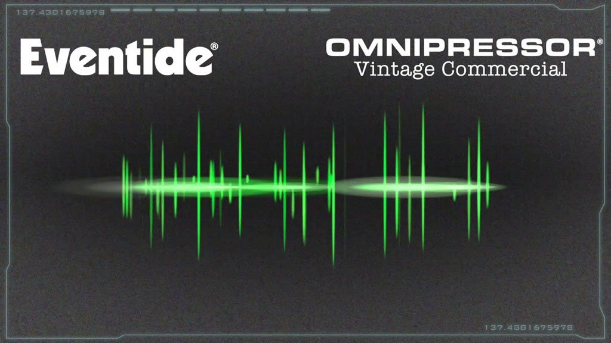

1974 — 블랙 페이스 2830

2023 — 복각 2830*Au · PHOTO · EVENTIDE
소리를 줄이는 기계가
소리를 뒤집기 시작했다
02 · 시작
PHOTO · EVENTIDE (FLASHBACK #3)
워터게이트 '18분 공백'에서
나온 아이디어
1973년, 이븐타이드 창업자 리처드 팩터는 닉슨 녹음테이프의 18분 공백을 조사하던 과학자 마크 와이스와 이야기를 나누다 사이드체인 아이디어를 얻었다. 그렇게 나온 것이 옴니프레서다. 다이내믹스를 '효과'로 쓰자고 한 첫 스튜디오 장비였다.
03 · 그때의 광고

설명서 대신
만화였다.
사자 울음을 작게, 생쥐 소리를 크게. 한 대로 컴프레서, 익스팬더, 노이즈 게이트, 리미터, 그리고 '다이내믹 리버서'까지 된다는 걸 그림으로 풀었다.
PHOTO · EVENTIDE ARCHIVE
04 · 무엇이 달랐나
작은 소리는 크게,
큰 소리는 작게
DYNAMIC REVERSAL
다이내믹 리버설 — 세기를 거꾸로 뒤집는다
INFINITE COMP
무한 압축 — 들어오는 크기와 상관없이 일정하게
VARIABLE GATE
가변 게이트 — 문턱 아래를 닫는다
SIDE CHAIN
사이드체인 — 다른 소리가 압축을 조종한다
지금은 흔한 기능이지만 1970년대엔 설명부터 어려웠다. 화이트 페이스(2826)는 쓰기 어려웠고, 곧 블랙 페이스 2830으로 바뀌었다.

영국에서는 소리 예시를 담은 광고 영상까지 만들어 이 기능들을 들려줬다.
PHOTO · EVENTIDE (VINTAGE COMMERCIAL)
05 · 숫자
ORIGINAL 2830 · 중고 호가
$6,000+
2830*Au 복각 · 2024 권장가
$1,999
원본은 몇백 대만 팔리고 단종됐다. 부품 수급이 막혔고, 무엇보다 시장에 설명하기 어려웠다. 그래서 남은 원본은 부르는 게 값이 됐고, 50년 뒤 같은 회로로 다시 나왔다.
06 · MUKIT NOTE
컴프레서를 '정리'가 아니라
'연주'로 쓰고 싶다면
원본 손그림 회로도를 그대로 살린 복각이라, 플러그인으로만 듣던 그 반응을 손으로 돌려 볼 수 있다. 드럼 룸 마이크나 보컬에 '리버설'을 걸어 보면 왜 50년 동안 회자됐는지 바로 들린다.
| MODEL | Eventide Omnipressor 2830*Au |
| ORIGINAL | 1973년 첫 출시 (2826 → 2830) |
| REISSUE | AES 2023 공개 · 2024년 1월 판매 확대 |
| NEW | 여러 대 링크, 입출력 트랜스포머 기본 |
| PRICE | US $1,999 (2024 권장가) · 국내가 미확인 |
SOURCE: Eventide 보도자료(Clyne Media, 2023.10.26 · 2024.01.25)
PHOTO · EVENTIDE (보도용 이미지)